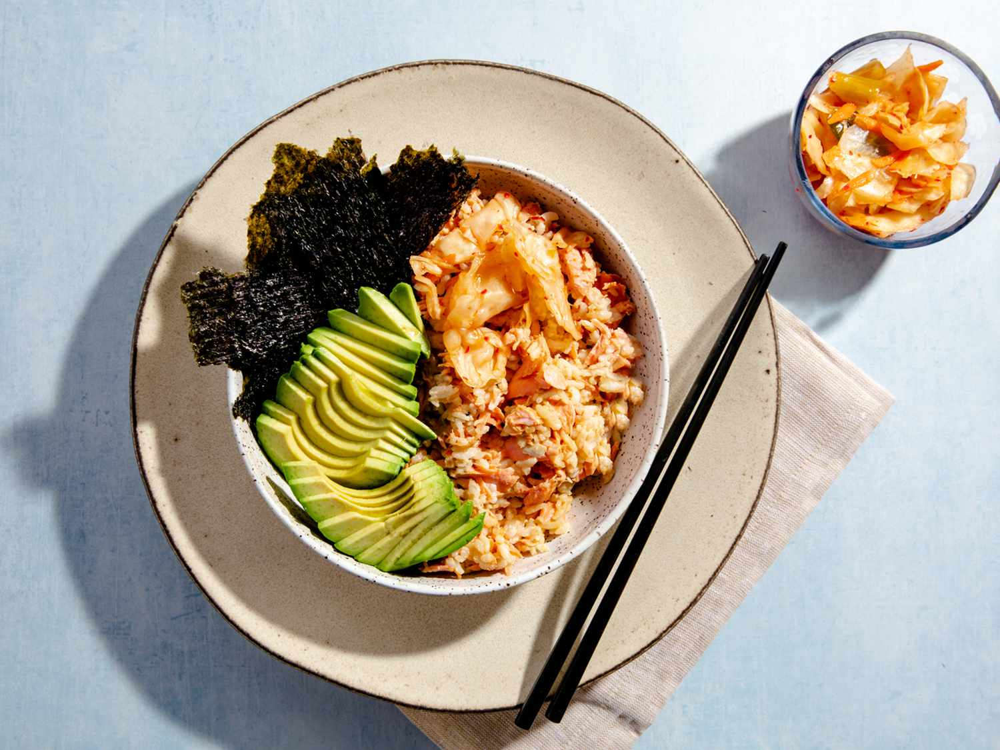

TikTok Salmon Bowl

Description
Salmon bowl and rice with soy sauce, avocado, sriracha, kimchi and Kewpie mayonnaise.
Ingredients
- 3 ounces cooked salmon, flaked
- 1 cup cooked white rice
- 1 tablespoon soy sauce
- ½ teaspoon sriracha or other hot saucey
- 2 teaspoons Japanese mayonnaise (such as Kewpie®)
- 1 tablespoon capers
- 1 ¼ pounds fresh wild salmon, coarsely chopped
- 1 sheet nori, torn
- ½ ripe avocado, sliced
- 2 cloves garlic, minced
- ¼ cup kimchi
Steps
- Use a fork to flake salmon onto a microwave-safe plate. Top with rice and place
1 ice cube on top. Cover with a microwave-safe lid and microwave at low power
for 30 seconds. Uncover and check temperature. If salmon and rice are not
warm enough, cover and return to the microwave for another 30 seconds at
low power.
- Uncover and remove ice cube. Drizzle soy sauce, Sriracha and mayonnaise over
the top and toss everything with a fork until well-combined.
- Garnish with torn pieces of nori, sliced avocado and kimchi.